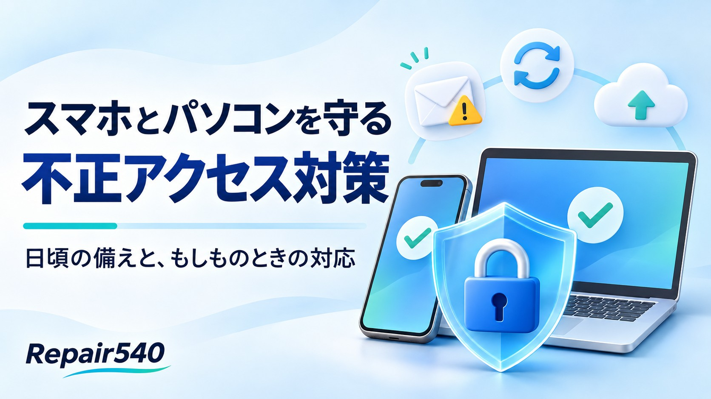

2026年11月2日、GMOインターネットグループなどが「お名前.com デスクトップクラウド」への不正アクセスについて記者会見を行いました。
こうしたニュースを見ると、「自分のスマホやパソコンは大丈夫だろうか」と心配になりますよね。
企業側で起きる情報漏えいは、利用者の注意だけでは防ぎきれない場合もあります。それでも、日頃の備えによって、自分のアカウントを守り、被害が広がる可能性を減らすことはできます。
今回は、普段から気を付けたいことと、万が一のときの対応についてまとめました。
心当たりのないメールやSMSは慎重に
知らない相手から届いたメールやSMSは、むやみに開かず、添付ファイルや本文中のリンクにも触れないようにしましょう。
また、有名な通販サイトや銀行、宅配会社などの名前で届いても安心はできません。差出人の名前やメールアドレスは偽装されることがあり、自然な日本語の偽メールもあります。
「アカウントを停止します」「本日中に手続きが必要です」など、急がせる内容には特に注意してください。
確認するときは、メールのリンクから進まず、普段使っている公式アプリや、あらかじめ登録したブックマークから確認する習慣を付けましょう。
iPhoneもAndroidも、パソコンも最新の状態に
アップデートには、新しい機能だけでなく、不正アクセスなどに悪用される弱点を修正する役割もあります。
iPhoneはiOS、Androidは本体のシステムやセキュリティ更新を確認しましょう。パソコンのWindows・macOSに加え、Chrome・Edge・Safariなどのブラウザや、普段使うアプリの更新も大切です。
お使いの機種に提供されている最新の更新を、公式の設定画面やアプリストアから適用してください。「更新してください」という不審なメールや広告からのインストールは避けましょう。
ただし、最新にしていても、偽サイトに自分でパスワードを入力してしまう被害までは防げません。アップデートと、日頃の注意を組み合わせることが大切です。
パスワードの使い回しをやめる
同じパスワードを複数のサービスで使っていると、どこか一つで漏れた情報が、別のサービスへの不正ログインにも使われるおそれがあります。
サービスごとに異なる長いパスワードを設定し、管理が難しい場合はパスワード管理機能を活用しましょう。
対応しているサービスでは、パスワードに加えて本人確認を行う「多要素認証」や、パスワードの代わりに使える「パスキー」の設定もおすすめです。認証コードを他人に教えたり、心当たりのないログイン要求を承認したりしないことも大切です。
大切なデータは、普段からバックアップを
写真や連絡先などの大切なデータは、定期的にバックアップを取りましょう。
バックアップは、故障やデータの破損などに備えるためのものです。情報の流出そのものを防ぐことはできませんが、端末が使えなくなったときの助けになります。
パソコンで外付けの保存機器を使う場合は、バックアップ後に取り外しておくなど、元のデータと一緒に被害を受けない工夫もしておきたいですね。
それでも「被害に遭ったかも」と思ったら
メールを開いたり、リンクを押したりしただけで、必ず被害に遭うわけではありません。慌てずに、その後に何をしたかを確認してください。
パスワードや認証コードを入力してしまった場合
安全な別の端末から公式アプリや公式サイトを開き、速やかにパスワードを変更しましょう。同じパスワードを使っている別のサービスも変更し、ログイン履歴や登録情報を確認してください。サービスの機能や公式サポートを利用して、不審な端末のログイン状態も解除しましょう。
ログインできなくなっている場合は、公式のアカウント復旧窓口へ相談してください。
カード情報を入力した、身に覚えのない決済・送金がある場合
被害が確定するのを待たず、カード会社や銀行、決済サービスの正規窓口へすぐに連絡し、利用停止などの対応を相談してください。
不審なアプリを入れたり、遠隔操作を許可したりした場合
その端末のWi-Fiやモバイル通信を切り、パソコンならLANケーブルも抜いて、信頼できる窓口へ相談しましょう。
画面に突然表示された「ウイルスに感染しました」という警告の電話番号には電話せず、指示されたアプリの追加や支払いもしないでください。
被害が疑われる場合は、メールや画面の写真、発生日時、取引履歴などを残しておきましょう。自己判断で初期化する前に相談し、必要に応じて警察やIPAの情報セキュリティ安心相談窓口にも連絡してください。
スマートフォンには、大切な写真や連絡先、買い物や銀行の情報などが入っています。「自分は大丈夫」と思わず、まずはアップデートの確認やパスワードの見直しから始めてみませんか。
アップデートやバックアップの操作でお困りの際は、大分市都町のRepair540へお気軽にご相談ください。
参考情報
2026年11月3日確認